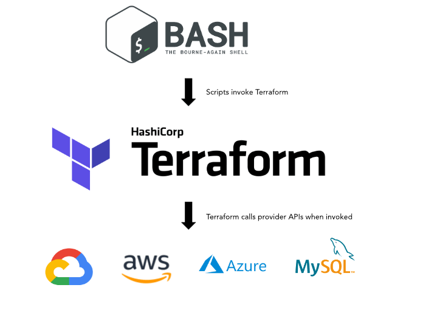
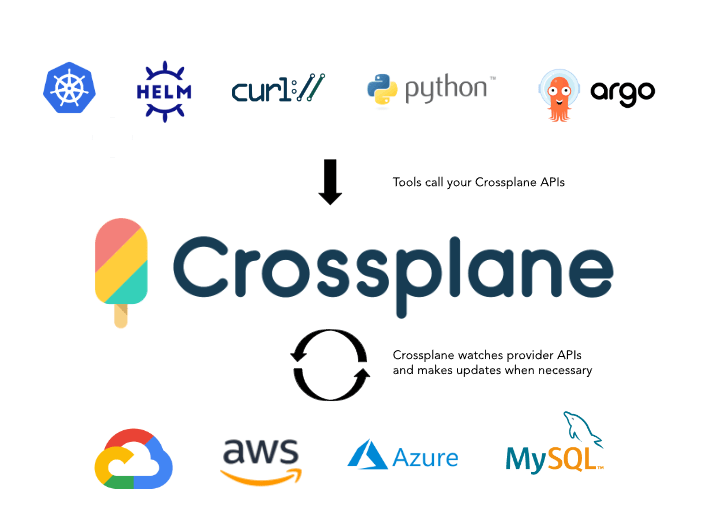
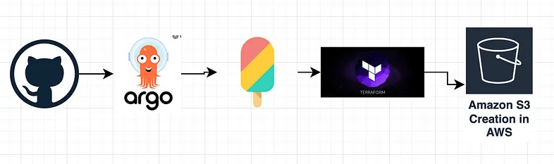
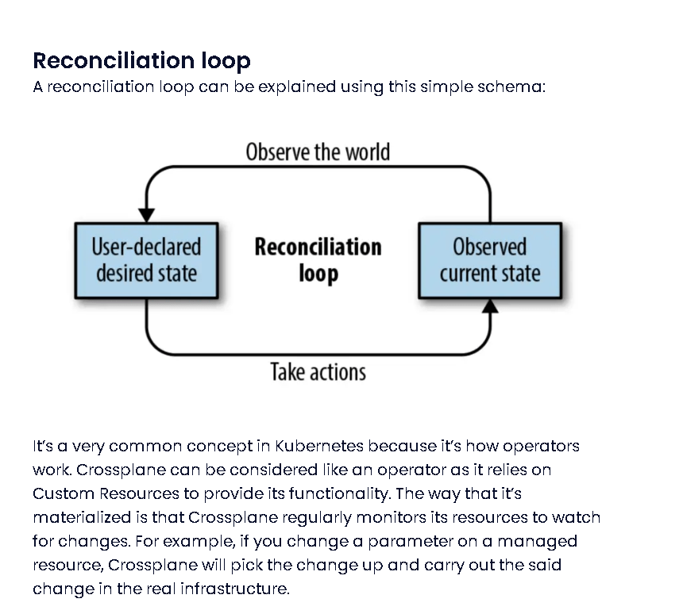
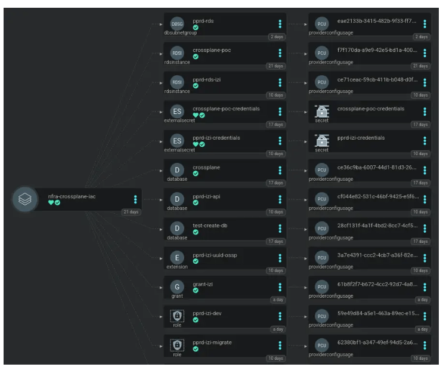
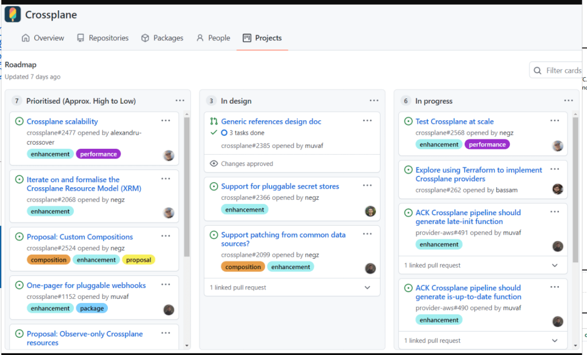
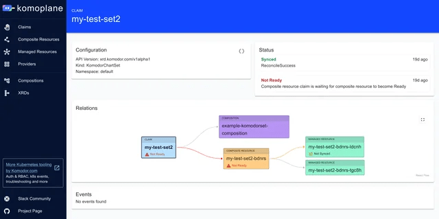
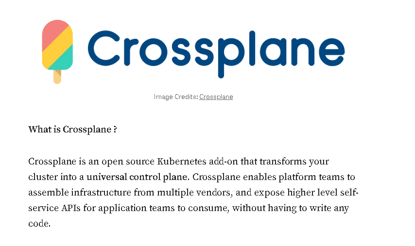
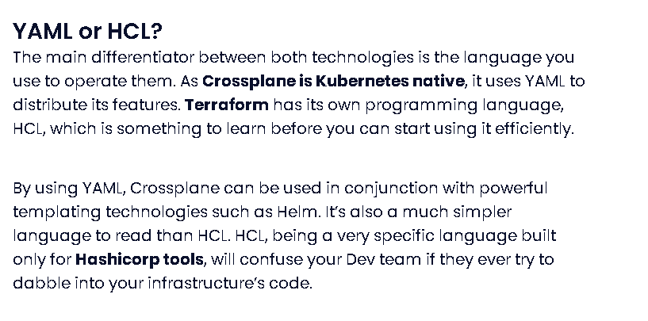

Crossplane versus Terraform
Creating a proof-of-concept (PoC) application using Crossplane versus Terraform involves demonstrating how each tool provisions and manages infrastructure resources. Below is a basic example of how you can use both Crossplane and Terraform to deploy a simple application, such as a Kubernetes cluster on a cloud provider (e.g., AWS).
Compare Execution Location


Crossplane Example
Architecture ( A bit later in the cycle / in the middle )

Argo CD Loop > Reconciliation Loop



UI To See CrossPlane > KomoPlane

Marketing Hype


Crossplane is a Kubernetes add-on that allows you to manage cloud infrastructure using Kubernetes manifests. Here’s a basic example using Crossplane to provision an AWS EKS (Elastic🔥 Kubernetes Service) cluster:
Prerequisites
-
A Kubernetes cluster
-
Crossplane installed in your Kubernetes cluster 🔥🔥🔥
-
AWS credentials configured in your cluster
1. Install Crossplane
kubectl create namespace crossplane-system ✅
helm repo add crossplane-stable https://charts.crossplane.io/stable/ ✅
helm install crossplane --namespace crossplane-system crossplane-stable/crossplane ✅
2. Define a Provider
Create a provider-config.yaml to specify your AWS credentials: 🔥
apiVersion: aws.crossplane.io/v1beta1 🔥
kind: ProviderConfig
metadata:
name: aws-provider
spec:
credentials:
source: Secret
secretRef:
namespace: crossplane-system 🔥
name: aws-creds
key: credentials
3. Define a Secret for AWS Credentials
apiVersion: v1 🔥
kind: Secret
metadata:
name: aws-creds
namespace: crossplane-system
type: Opaque
data:
credentials:
4. Define an EKS Cluster
Create a eks-cluster.yaml file:
apiVersion: eks.aws.crossplane.io/v1beta1 🔥
kind: Cluster 🔥
metadata:
name: example-cluster
spec:
providerConfigRef:
name: aws-provider
forProvider:
region: us-west-2
version: "1.21"
writeConnectionSecretToRef: 🔥
name: example-cluster-conn
namespace: crossplane-system
5. Apply the Configuration
kubectl apply -f provider-config.yaml 🔥
kubectl apply -f eks-cluster.yaml 🔥
Terraform Example ✅
Terraform uses configuration files to define the infrastructure you want to deploy. Here’s how you would achieve a similar result using Terraform:
Prerequisites
-
Terraform installed
-
AWS credentials configured
1. Create a Terraform Configuration File (main.tf) ✅
provider "aws" {✅
region = "us-west-2"
}
resource "aws_eks_cluster" "example" {✅
name = "example-cluster"
role_arn = aws_iam_role.eks_cluster.arn
version = "1.21"
vpc_config {
subnet_ids = aws_subnet.example[*].id✅
}
}
resource "aws_iam_role" "eks_cluster" {✅
name = "example-cluster-role"
assume_role_policy = jsonencode({
Version = "2012-10-17"
Statement = [
{
Action = "sts:AssumeRole"
Effect = "Allow"
Principal = {
Service = "eks.amazonaws.com"
}
}
]
}
resource "aws_subnet" "example" {✅
count = 2
vpc_id = aws_vpc.example.id
cidr_block = cidrsubnet(aws_vpc.example.cidr_block, 8, count.index)
availability_zone = element(data.aws_availability_zones.available.names, count.index)
}
resource "aws_vpc" "example" {✅
cidr_block = "10.0.0.0/16"
}
data "aws_availability_zones" "available" {}
2. Initialize and Apply Terraform Configuration
terraform init✅
terraform apply✅
Comparison
-
Crossplane integrates🔥 with Kubernetes and uses Kubernetes-native CRDs (Custom Resource Definitions🔥) to manage infrastructure. It’s more suitable if you’re already using Kubernetes and want to manage infrastructure as part of your Kubernetes setup.
-
Terraform is a standalone tool✅ for managing infrastructure using a declarative configuration language. It’s ideal for managing infrastructure across various platforms and provides a broad ecosystem of modules and providers.
Both tools can be effective, but your choice might depend on your existing stack and preferences for managing infrastructure.
🔗 Connect with me:
-
💼 LinkedIn: https://www.linkedin.com/in/rifaterdemsahin/
-
🐦 Twitter: https://x.com/rifaterdemsahin
-
🎥 YouTube: https://www.youtube.com/@RifatErdemSahin
-
💻 GitHub: https://github.com/rifaterdemsahin
Imported from rifaterdemsahin.com · 2024